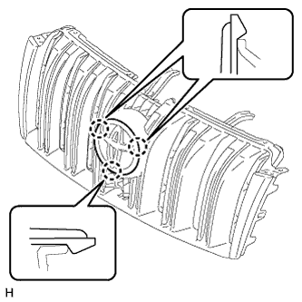
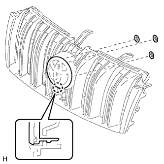
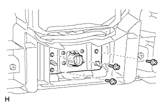
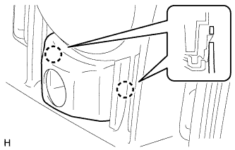

РЕШЕТКА РАДИАТОРА > РАЗБОРКА |
| 1. СНИМИТЕ ЭМБЛЕМУ РЕШЕТКИ РАДИАТОРА (ИЛИ ПЕРЕДНЕЙ ПАНЕЛИ) (для моделей без динамической радарной системы круиз-контроля) |
|  |
Освободите 3 захвата и снимите эмблему решетки радиатора (или передней панели).
| 2. СНИМИТЕ ЭМБЛЕМУ РЕШЕТКИ РАДИАТОРА (ИЛИ ПЕРЕДНЕЙ ПАНЕЛИ) (для моделей с динамической радарной системой круиз-контроля) |
|  |
Снимите 3 пружинных гайки.
Освободите захват и снимите эмблему решетки радиатора (или передней панели).
| 3. СНИМИТЕ ПЕРЕДНЮЮ ТЕЛЕКАМЕРУ В СБОРЕ (для моделей с широкоугольным монитором переднего вида) |
|  |
Выверните 3 винта и снимите переднюю телекамеру.
| 4. СНИМИТЕ ЦЕНТРАЛЬНУЮ ОБЛИЦОВКУ РЕШЕТКИ РАДИАТОРА В СБОРЕ (для моделей с системой широкоугольного монитора переднего вида) |
|  |
Расцепите 2 захвата и снимите центральную облицовку решетки радиатора.